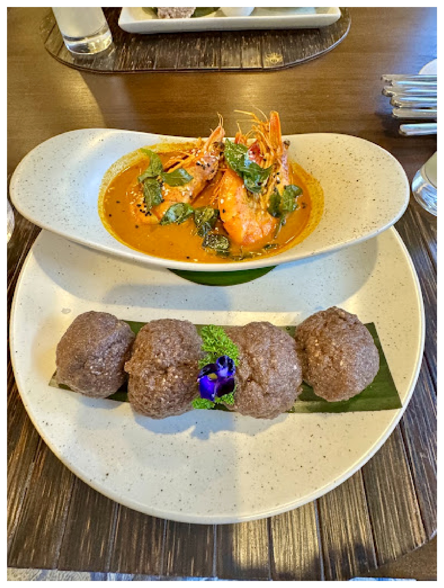
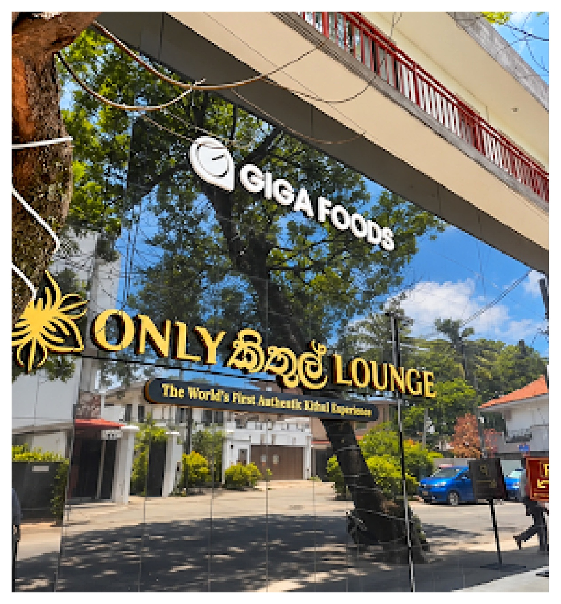
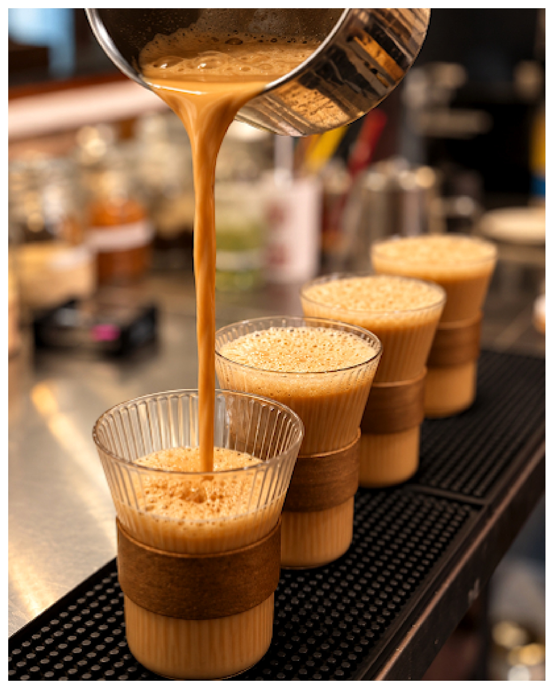
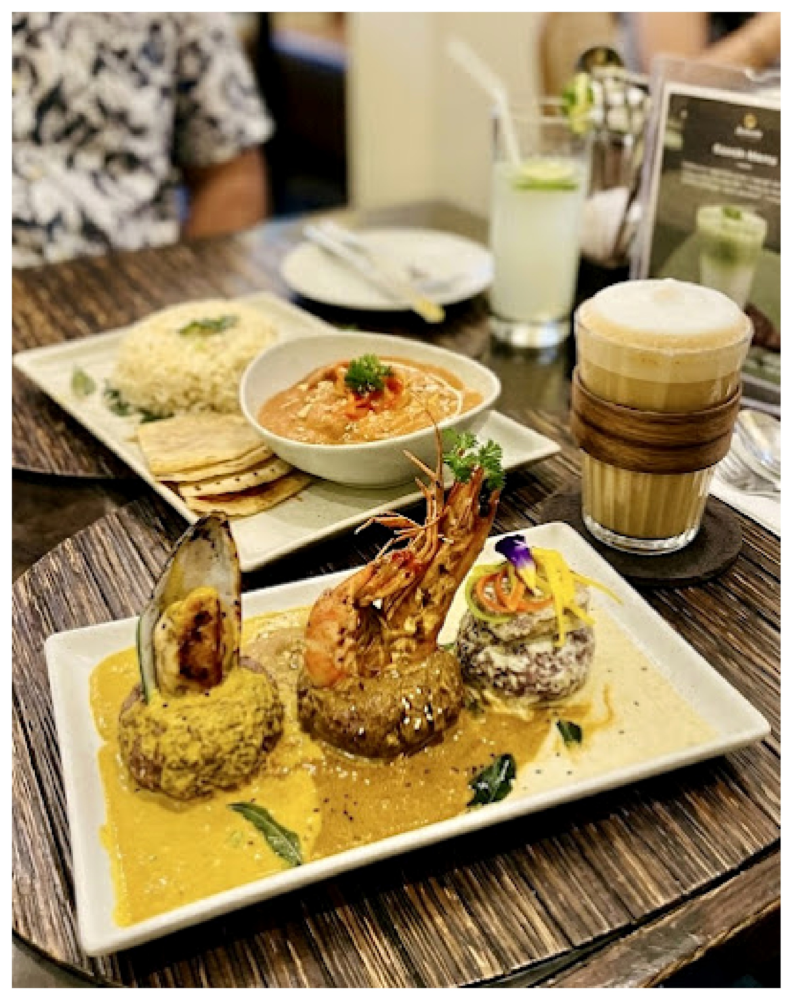
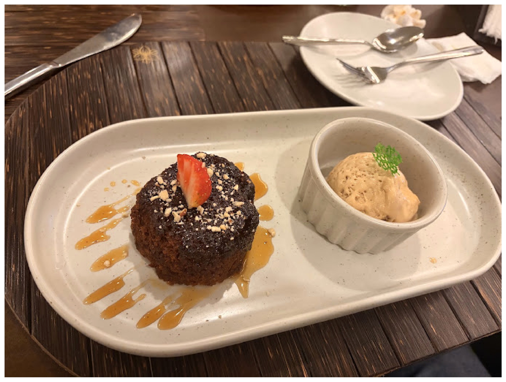

Heritage on a plate

ONLY KITHUL LOUNGE · COLOMBO 05
A Sri Lankan dining experience built around the golden character of Kithul.
NOT A GENERIC CAFÉ.
Only Kithul Lounge brings Sri Lanka’s traditional Kithul into a contemporary Colombo setting. The supplied menu shows Kithul moving through the whole experience — from Kithul Piti Thalapa, Hoppers and Pittu to coffee, smoothies, savoury glazes and sweet finishes.
The visual language of this website follows the lounge itself: warm timber, deep botanical green, natural cream, amber-gold Kithul tones and the real food photography supplied for the project.
Discover the Kithul journey ↗
At Only Kithul Lounge, the ingredient is not a decoration. It is the thread connecting Sri Lankan heritage with the modern menu.



Food and lounge photography prepared from the supplied PDF and enhanced for high-resolution web display.
Google rating shown in current public listings.
Public listings describe the lounge as a calm, cosy café-lounge with Sri Lankan and Indian influences, Kithul-focused dishes, speciality coffee and a relaxed setting.
For the live customer-review feed, use the Google Maps button. Review text, count and rating can change over time.
No. 07, Fife Road, Colombo 05, Sri Lanka. Open daily from 10:00 AM to 10:00 PM. Fresh Kithul Raa Mandi Hoppers are listed from 3:00 PM to 6:00 PM.
Choose your dishes above or message the lounge directly.